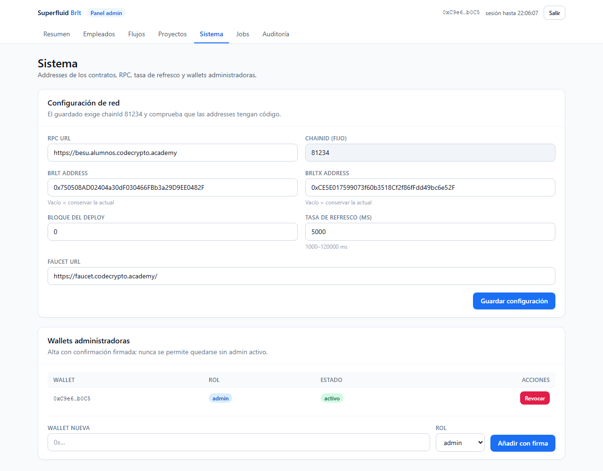

07-Manual-del-Admin\manual-empleado.md
# Manual del Empleado (guía operativa)
Empezar en 5 minutos
Mi nómina
- Entra en la Suite:
/suite/loginy conecta MetaMask. - Verás tres números: Cobrable ahora, BRLT en cartera y Salario por periodo.
- En Mis flujos verás el “grifo” activo, cuánto llevas acumulado y cuándo termina.
 (Pantalla de acceso de la Suite del Empleado, sin registros de datos personales.)
(Pantalla de acceso de la Suite del Empleado, sin registros de datos personales.)
Cobrar
Cómo se cobra
- Escribe el importe o pulsa «Todo (… BRLT)» si quieres el total.
- Pulsa «Cobrar»: MetaMask te pedirá una firma.
- En segundos tu wallet recibe BRLT real: verás «Cobrable» bajar lo mismo que sube «BRLT en cartera».
Bueno saber: puedes cobrar aunque el contrato esté “en pausa” y aunque tu ficha esté dada de baja (ventana de retiro de 90 días).
Mi flujo
Estados y qué significan
| Estado | Qué pasa | Qué hago |
|---|---|---|
| activo | El grifo corre | nada, o cobrar cuando quieras |
| pausado | El devengo está congelado | espera; el tiempo se aplaza |
| vencido | Terminó su plazo | pulsa «Liquidar» (lo acumulado pasa a cobrable) |
| terminado | Todo liquidado | puedes cobrar lo restante |
Mi perfil y mis datos
Tú decides
- Guardar perfil: tu email/teléfono.
- Dar/Retirar consentimiento: siempre visible con fecha.
- Borrar mis datos: efecto inmediato (email/teléfono fuera); a los 30 días se anonimiza el nombre; tu wallet queda para retirar hasta 90 días tras la baja.
Preguntas frecuentes
¿Y si no veo ningún flujo?
Aún no te crearon el “grifo”: pídeselo al administrador. Cuando lo haga, aparecerá aquí en el momento (la pantalla se refresca cada 5 segundos).
¿Y si la app está caída?
Los flujos viven en la cadena: tu BrltX y tus pagos no desaparecen. Cuando la app vuelva, todo se acumula como si nada.

(Referencia del panel de configuración; los empleados no acceden a esta pantalla.)